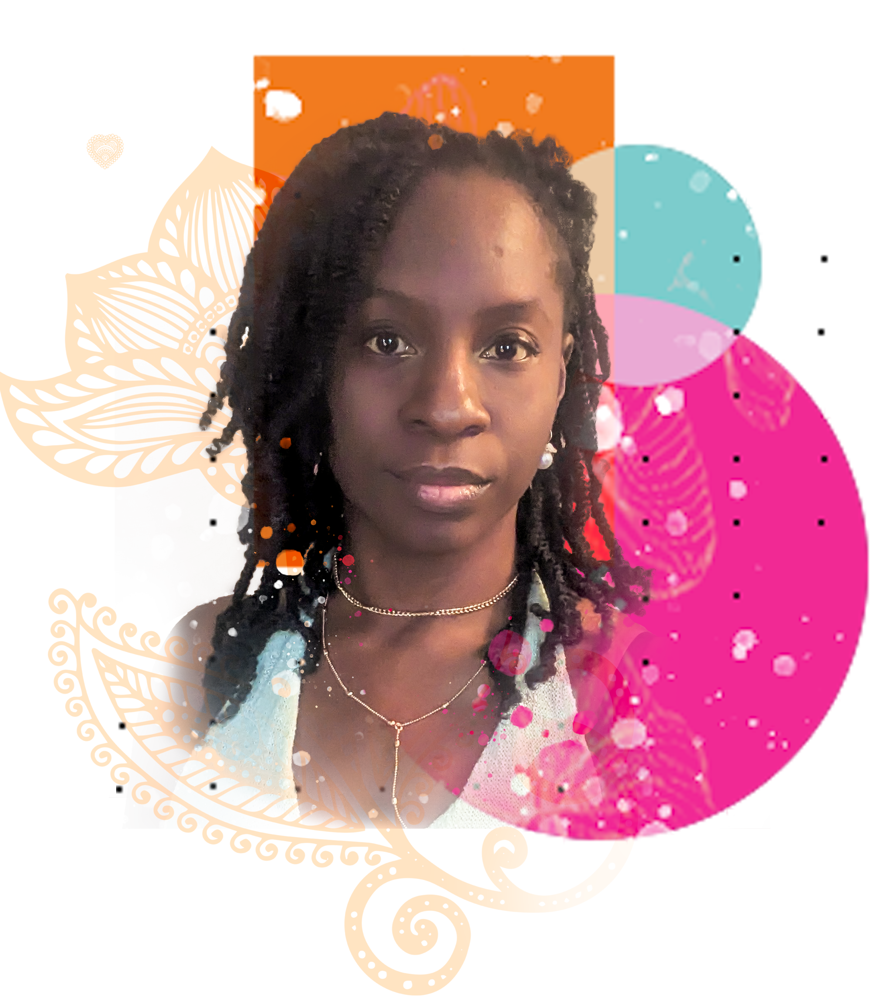
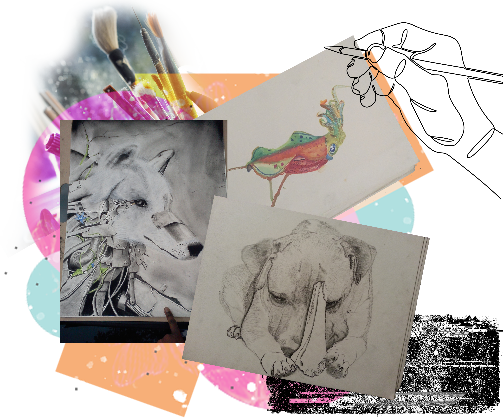
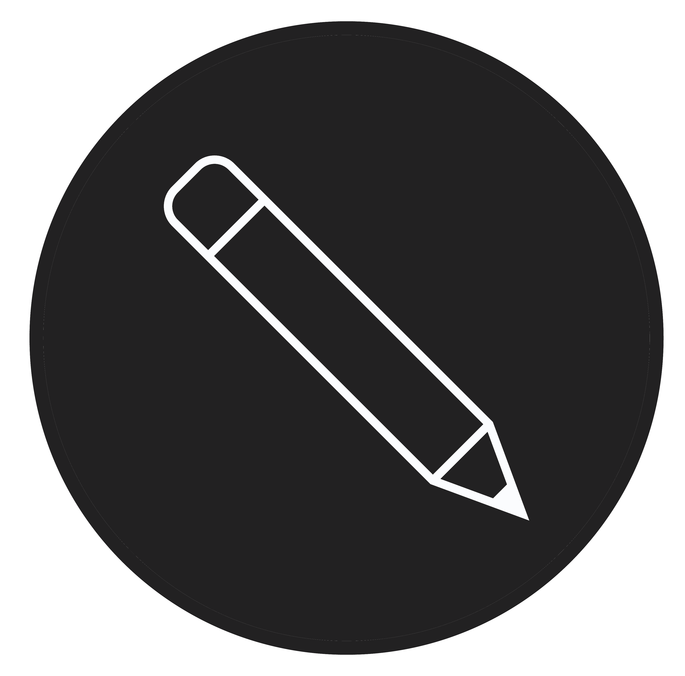
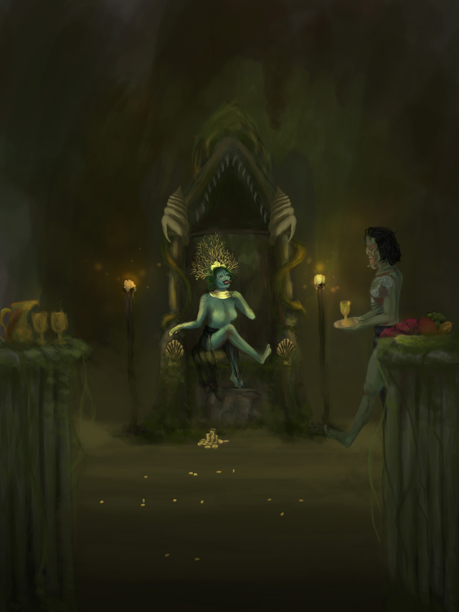
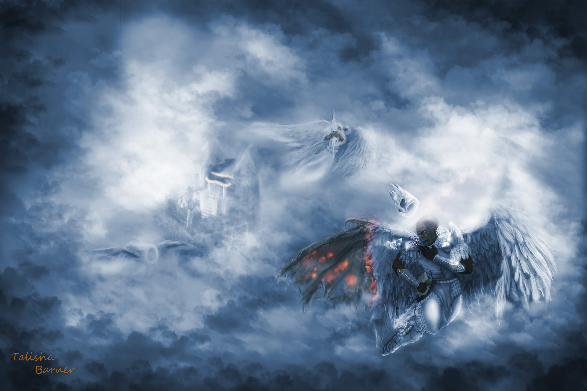
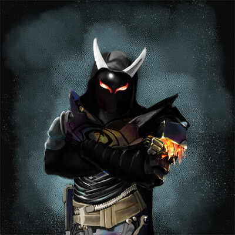
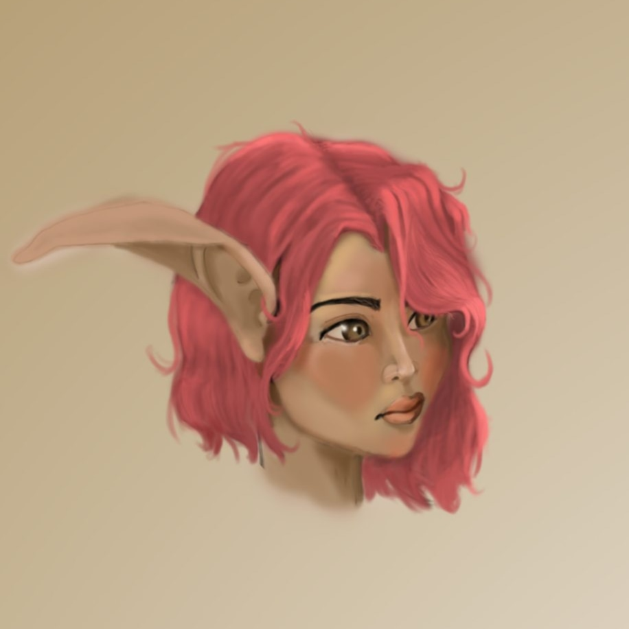

About Me
A little design a little code and curiosity.
Welcome to all you need to know about me. Since this is your first time meeting me, we'll start with the basics before getting into the more interesting stuff. I'm a UI/UX Designer, Web Designer, and a Front-End Developer. I enjoy working on both sides of the screen, designing an experience first and then bringing it into the browser with HTML, CSS, and JavaScript.


My Story
From curiosity to creation.
I am also an artist at heart, and bringing an idea into reality is my jam. My first brush with art, pun absolutely intended, came from drawing anime and Looney Tunes characters as a child. As teenagers, a friend and I became curious about how websites worked and experimented with HTML and CSS by inspecting pages and customizing our own blog layouts.
My education has allowed me to build skills on both sides of the process. I earned a Google UX Design certificate, where I studied User Research, wireframing and prototyping, and tools like Figma and Adobe XD. I also earned a Certificate in Web Development from Texas A&M University-Texarkana, strengthening my understanding of how designs are translated into functional digital experiences.
How I Work
From ideas to interactive experiences.
I like to think of myself as a visual translator. I take information, organize it into a clear hierarchy, and turn it into something people can understand and navigate. My process typically begins with understanding the information and goals of a project, followed by sketches on paper and wireframes in Figma. From there, I explore typography, imagery, icons, and visual direction using tools like Photoshop and Illustrator. After refining and prototyping the design, I move into Visual Studio Code, where I build the front-end using HTML, CSS, and JavaScript. I can also help improve an existing into Visual Studio Code, where I build the front-end using HTML, CSS, and JavaScript. I can also help improve an existing interface rather than always starting from scratch.
Understanding
Project goals, users, and content.
Organize
Heirarchy and information architechture.

Explore
Sketch, wireframes, and visual directions.
Design
Figma, Photoshop, Illustrator.
Build
Visual Studio Code, HTML, CSS, JavaScript.
Art, games, and everything in between
My curiosity to create something visually appealing eventually led me to study 3D animation while exploring game development at Northwest Vista Community College. My creative interests have since grown to include digital painting, video editing, motion graphics, and video games.
Those interests continue to influence the way I think about color, composition, storytelling, and interactive design.



